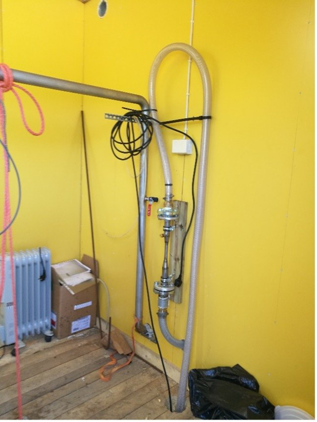
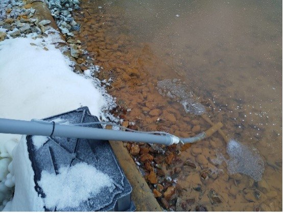
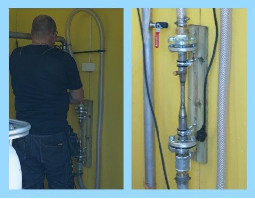

Installed, in real water.
Six deliveries in service — plus the published Kuopio trial and the Carelian Caviar ozone work as detailed case studies.
Unique Water, Philippines

In collaboration with our partner Unique Water in the Philippines, we have supplied radon removal units to potable water pumping stations. The Philippines maintains a radon limit of 11 Bq/l — significantly lower than in several European countries; in Finland, limits range between 300 and 400 Bq/l. RadOx — a combination of Booster, OxTube and GasRemox — strips radon and the radon–air mixture from the water; depending on the station, collected radon is contained or released.
Lake rejuvenation — Sukhrali pond, Haryana, India
Indian rivers were relatively healthy in the mid-1990s; the current situation is dire. With our Indian partner Elixiir, SansOx rejuvenates lakes into recreational spaces with clear, odour-free water. The inflow of untreated water was halted, banks cleaned, and water pumped through OxTubes to raise dissolved oxygen while natural enzyme treatment floated bottom solids for collection. A maintenance contract keeps the pond clear — and work is under way at further lakes, including Sadpura village.
Siuntio, Finland

Two adjacent wells at one pumping station: excessive iron in one, low pH from dissolved CO₂ in the other. Siuntio Water wanted to minimise chemicals. OxTube was integrated into both lines — compressed air precipitated the iron and stripped the CO₂, lifting pH; GasRemox removed the extracted gas and sand filters caught the precipitate. Water quality improved for the local spa and residents, and Siuntio engaged SansOx for a second station.
Finnspring, Finland

Wastewater arrived from varied sources with varying quality — hard to treat consistently. The ClariOx system in the collection drain both aerated and homogenised the water, so the treatment system purified more efficiently. The delivery: OxTube, hoses, a bucket and a submersible pump.
Ekokymppi, Kajaani, Finland
At the sorting station, regeneration water was not reaching the required dissolved-oxygen level. OxTube improved oxygen dissolution enough to cut the gas requirement. Ekokymppi then bought a second unit for a drain — homogenising, aerating, and keeping H₂S from forming.
Mine site, Finland
Abandoned-mine water carries dissolved minerals — above all iron. The Vertical Flow Reactor (VFR), developed with LUT University and Christoph Walkersdorfer, uses OxTube to precipitate iron for sand filtration, with significantly enhanced precipitation over previous methods. OxTube also prevents and neutralises H₂S, which forms in anaerobic conditions.
Ninety seconds of proof
University-lab test runs, a client demo — and an offer: we test with your own water, and you verify the result in your own laboratory.
Video: Has OxTube results been proven (1:31) — SansOx material; subtitles follow the site language.